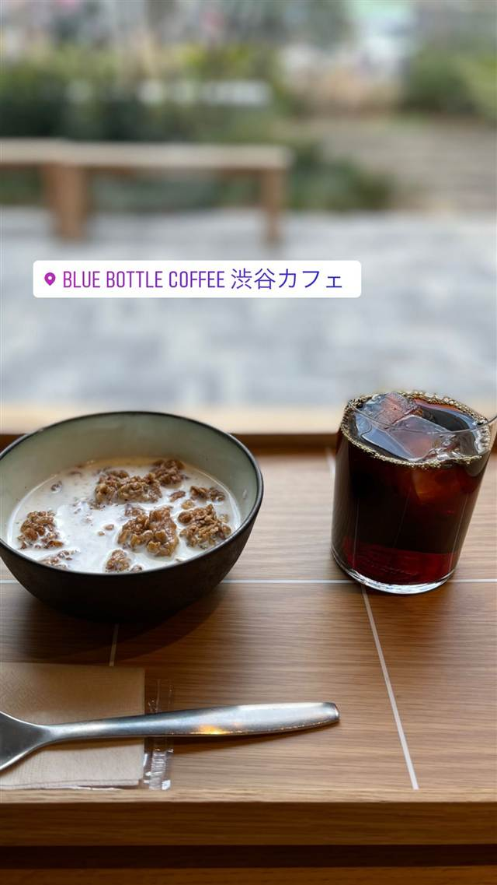

ブルーボトルコーヒー 渋谷カフェ
ブルーボトル世界初の公園内カフェ、エトナ山の火山灰タイル
BLUE BOTTLE COFFEE 渋谷カフェ
2021年4月、渋谷区立北谷公園内にオープンしたブルーボトルコーヒー初の公園内カフェ。建築家・芦沢啓治氏が手がけた開放的な空間で、コーヒーからワイン、屋外シートでの一杯まで一日を通して楽しめる。
TRIVIA
豆知識
- ブルーボトルコーヒーが世界で初めて手がけた公園内カフェ
- 内装タイルはイタリア・エトナ山の火山灰から作られた特注タイル「ExCinere」
REVIEWS
世間の評判
3.12食べログ
公園内の開放的な空間と混雑
- 北谷公園内にあり緑に囲まれた開放的な空間だと高く評価されている
- 屋外席は12席程度と少なく、混雑時は座れないこともあるという声がある
- コーヒーの味には評価にばらつきがあり好みが分かれるという声もある
食べログ 口コミ184件
| 創業 | 2021年4月28日オープン（渋谷区立北谷公園内） |
|---|---|
| 系譜 | ブルーボトルコーヒーは2002年、ジェームス・フリーマン氏が米カリフォルニア州オークランドの自宅ガレージで焙煎を始めたのがルーツ。日本1号店は2015年2月、清澄白河にオープン |
| 看板 | コーヒー、デザート |
| こだわり | 1階の大きなコーヒーカウンターと公園を見渡す2階ラウンジで構成。建築は芦沢啓治建築設計事務所が担当し、イタリア・エトナ山の火山灰から作られたタイル「ExCinere」を使用 |
| どこから | 都心 |
| 営業時間 | 月〜日 08:00-20:00 |
| 予算 | 昼 ～¥999 夜 ～¥999 |
| 場所 | 渋谷駅 東京都渋谷区神南1-7-3 渋谷区立北谷公園内 |
| メモ | 公園内立地でテイクアウト・屋外シート利用可、渋谷カフェ限定メニューあり |
食べたもの：コーヒーとデザート
NEARBY
近い店・同じ系統の店
-
 ★
コーヒー 新宿三丁目
AALIYA COFFEE ROASTERS
37年続く本店譲りのフレンチトーストを並ばず味わえる
昼 ¥1,000～¥1,999 夜 ¥1,000～¥1,999
★
コーヒー 新宿三丁目
AALIYA COFFEE ROASTERS
37年続く本店譲りのフレンチトーストを並ばず味わえる
昼 ¥1,000～¥1,999 夜 ¥1,000～¥1,999
-
 ★
コーヒー 保田駅
音楽と珈琲の店 岬
鋸山の湧き水でコーヒーを淹れ、その水は店の外に持ち出せない
昼 ～¥999
★
コーヒー 保田駅
音楽と珈琲の店 岬
鋸山の湧き水でコーヒーを淹れ、その水は店の外に持ち出せない
昼 ～¥999
-
 パスタ 渋谷
KURA 渋谷店
元プロゴルファーら異業種出身者が始めた、もちもち生パスタ50種以上
昼 ¥1,000～¥1,999 夜 ¥2,000～¥2,999
パスタ 渋谷
KURA 渋谷店
元プロゴルファーら異業種出身者が始めた、もちもち生パスタ50種以上
昼 ¥1,000～¥1,999 夜 ¥2,000～¥2,999
-
 ベトナム 渋谷駅
ミス・サイゴン（MISS SAIGON）
ベトナム人スタッフが作る野菜たっぷりのフォーとバインセオ
夜 ～¥5,999
ベトナム 渋谷駅
ミス・サイゴン（MISS SAIGON）
ベトナム人スタッフが作る野菜たっぷりのフォーとバインセオ
夜 ～¥5,999
-
 台湾 恵比寿
七一飯店
週1回だけの営業だった名残の店名、看板は魯肉飯
昼 ¥1,000～¥1,999 夜 ¥1,000～¥1,999
台湾 恵比寿
七一飯店
週1回だけの営業だった名残の店名、看板は魯肉飯
昼 ¥1,000～¥1,999 夜 ¥1,000～¥1,999
-
 コーヒー 御成門・浜松町・大門
ル・パン・コティディアン 芝公園店
ベルギー発、1990年創業のベーカリーで東京タワー望むテラス朝食
夜 ¥3,000～¥3,999
コーヒー 御成門・浜松町・大門
ル・パン・コティディアン 芝公園店
ベルギー発、1990年創業のベーカリーで東京タワー望むテラス朝食
夜 ¥3,000～¥3,999
ONSEN & SAUNA